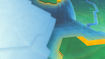
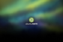
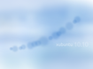
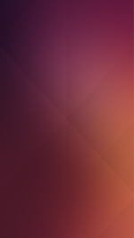

Ubuntu-Wallpaper
Jede Ubuntuversion und -variante hat einen eigenen charakteristischen Desktophintergrund. Dieser Artikel soll eine Übersicht aller bisher von Ubuntu, Kubuntu, Lubuntu, Xubuntu, Ubuntu GNOME, Ubuntu MATE und Ubuntu Budgie benutzten Standard-Wallpaper zeigen. Des Weiteren kann man die Bilder auch herunterladen, um sie in nachfolgenden Versionen weiterhin nutzen zu können.
Installation¶
Die Standard-Hintergrundbilder und andere Wallpaper können über folgende Pakete installiert werden:
ubuntu-wallpapers-artful (Ubuntu 17.10)
ubuntu-wallpapers-zesty (Ubuntu 17.04)
ubuntu-wallpapers-yakkety (Ubuntu 16.10)
ubuntu-wallpapers-xenial (Ubuntu 16.04)
ubuntu-wallpapers-wily (Ubuntu 15.10)
ubuntu-wallpapers-vivid (Ubuntu 15.04)
ubuntu-wallpapers-trusty (Ubuntu 14.04)
ubuntu-wallpapers-precise (Ubuntu 12.04)
Hinweis:
Für eine (chronologische) Übersicht aller bisher erschienenen Ubuntuversionen sowie deren Eigenschaften und Neuerungen bietet sich der Artikel Steckbriefe der Ubuntuversionen an. Für eine grafische Übersicht kann man Ubuntu/Releases verwenden.
Hintergrundbild¶
Generell kann das Hintergrundbild durch einen  auf dem Desktop geändert werden. Je nach Desktop-Umgebung unterscheidet sich der entsprechende Eintrag des sich öffnenden Menüs: "Desktop-Hintergrund ändern" (Ubuntu, Ubuntu GNOME), "Erscheinungsbild der Arbeitsfläche" (Kubuntu), "Schreibtischeinstellungen" (Xubuntu).
auf dem Desktop geändert werden. Je nach Desktop-Umgebung unterscheidet sich der entsprechende Eintrag des sich öffnenden Menüs: "Desktop-Hintergrund ändern" (Ubuntu, Ubuntu GNOME), "Erscheinungsbild der Arbeitsfläche" (Kubuntu), "Schreibtischeinstellungen" (Xubuntu).
Ausführliche Informationen zum Ändern des Hintergrundbildes liefern die Artikel der einzelnen Desktop-Umgebungen:
Ubuntu und Ubuntu GNOME: GNOME3 Systemeinstellungen
Ubuntu MATE: MATE Desktop anpassen
Kubuntu: KDE Systemeinstellungen
Lubuntu: LXDE Einstellungen
Xubuntu: Xfce Schreibtischeinstellungen
Chronologie der Hintergrundbilder¶
Es wird jeweils nur das Standard-Wallpaper einer jeden Desktop-Umgebung der jeweiligen Version gezeigt.
Hinweis:
Um das entsprechende Hintergrundbild herunterzuladen, macht man einen Rechtsklick auf das Vorschaubild und wählt anschließend die Option „Ziel speichern unter...“.
| Wallpaper der verschiedenen Versionen | |||||||
| Version | Ubuntu | Kubuntu | Xubuntu | Lubuntu | Ubuntu GNOME | Ubuntu MATE | Ubuntu Budgie |
| Ubuntu 17.10 „Artful Aardvark“ |  | – | |||||
| Ubuntu 17.04 „Zesty Zapus“ | |||||||
| Ubuntu 16.10 „Yakkety Yak“ |  | ||||||
| Ubuntu 16.04 „Xenial Xerus“ |  |  | – | ||||
| Ubuntu 15.10 „Wily Werewolf“ | – | ||||||
| Ubuntu 15.04 „Vivid Vervet“ | – | ||||||
| Ubuntu 14.10 „Utopic Unicorn“ | – | – | |||||
| Ubuntu 14.04 LTS „Trusty Tahr“ | – | – | |||||
| Ubuntu 13.10 „Saucy Salamander“ | – | – | |||||
| Ubuntu 13.04 „Raring Ringtail“ | – | – | |||||
| Ubuntu 12.10 „Quantal Quetzal“ | – | – | – | ||||
| Ubuntu 12.04 LTS „Precise Pangolin“ | – | – | – | ||||
| Ubuntu 11.10 „Oneiric Ocelot“ | – | – | – | ||||
| Ubuntu 11.04 „Natty Narwhal“ | – | – | – | ||||
| Ubuntu 10.10 „Maverick Meerkat“ |  | – | – | – | |||
| Ubuntu 10.04 LTS „Lucid Lynx“ | – | – | – | ||||
| Ubuntu 9.10 „Karmic Koala“ |  | – | – | – | – | ||
| Ubuntu 9.04 „Jaunty Jackalope“ | – | – | – | – | |||
| Ubuntu 8.10 „Intrepid Ibex“ |  | – | – | – | – | ||
| Ubuntu 8.04 LTS „Hardy Heron“ | – | – | – | – | |||
| Ubuntu 7.10 „Gutsy Gibbon“ | – | – | – | – | |||
| Ubuntu 7.04 „Feisty Fawn“ | – | – | – | – | |||
| Ubuntu 6.10 „Edgy Eft“ | – | – | – | – | |||
| Ubuntu 6.06 LTS „Dapper Drake“ | – | – | – | – | |||
| Ubuntu 5.10 „Breezy Badger“ | – | – | – | – | |||
| Ubuntu 5.04 „Hoary Hedgehog“ | – | – | – | – | – | ||
| Ubuntu 4.10 „Warty Warthog“ | – | – | – | – | – | – | |
Ubuntu Touch¶
| Wallpaper von Ubuntu Touch | ||
| Version | Phone | Tablet |
| Ubuntu 15.04 „Vivid Vervet“ |  | |
| Ubuntu 14.04 „Trusty Tahr“ |  | |
| Ubuntu 13.10 „Saucy Salamander“ | ||
Links¶
Xubuntu/Bilder - Xubuntu Standarddesigns
Lubuntu/Bilder - Lubuntu Standarddesigns
A look back at every Ubuntu Default Wallpaper – from Warty to Maverick

- Erstellt mit Inyoka
-
 2004 – 2017 ubuntuusers.de • Einige Rechte vorbehalten
2004 – 2017 ubuntuusers.de • Einige Rechte vorbehalten
Lizenz • Kontakt • Datenschutz • Impressum • Serverstatus -
Serverhousing gespendet von